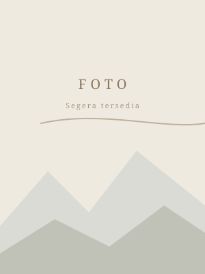

[NAMA ALUMNI]
Beasiswa Universitas
Discipleship · Catatan Sejarah & Perayaan
Discipleship bukanlah peringkat atau kompetisi. Ia adalah arsip hidup — bukti bahwa dari satu generasi ke generasi berikutnya, semangat belajar dan ikatan komunitas ICATI Jatim terus berlanjut.
Setiap nama di halaman ini adalah sebuah perjalanan — alumni ICATI Jatim yang melanjutkan studi di Taiwan, angkatan demi angkatan, dari tahun ke tahun. Mereka yang menerima beasiswa ditandai dengan stempel di samping namanya.
Jenis Beasiswa
Berdasarkan Tahun
Susunan alumni berdasarkan tahun keberangkatan / angkatan. Gunakan pencarian di bawah untuk menemukan nama alumni.
Angkatan 2025

Angkatan 2024
Angkatan 2023
Setiap perjalanan dimulai dari satu langkah. Mulailah dengan mendaftar bersama ICATI Jatim.